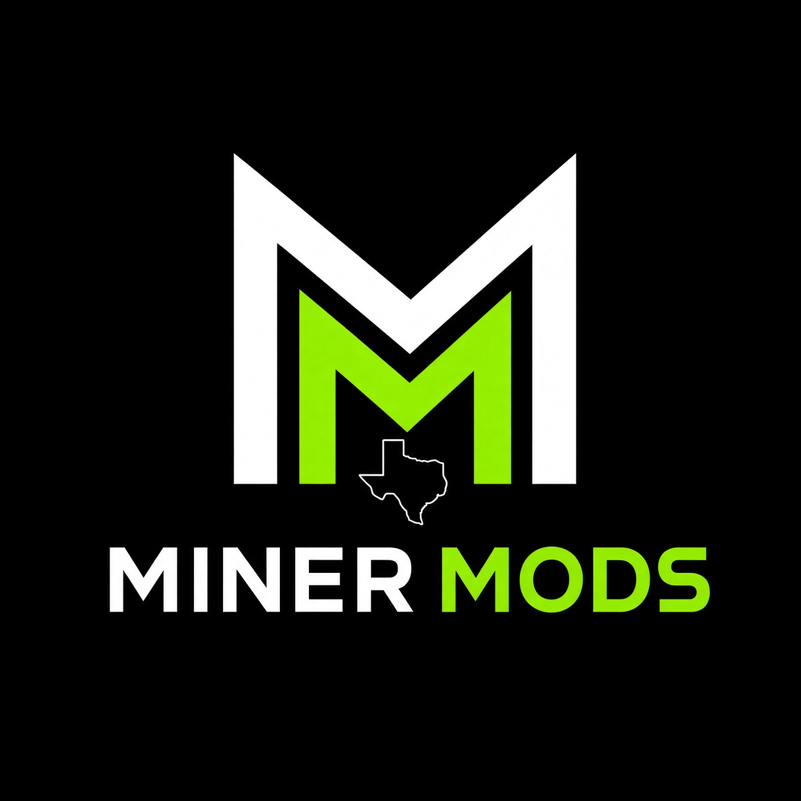

Hands-on cooling builds, teardown mods, and honest gear picks for solo miners who want to push past what everyone else is doing.
Two kinds of content live here: the basics you need to mod safely, and the radical builds nobody else is posting. Every product gets a real opinion — what's worth buying, what's not, and why.